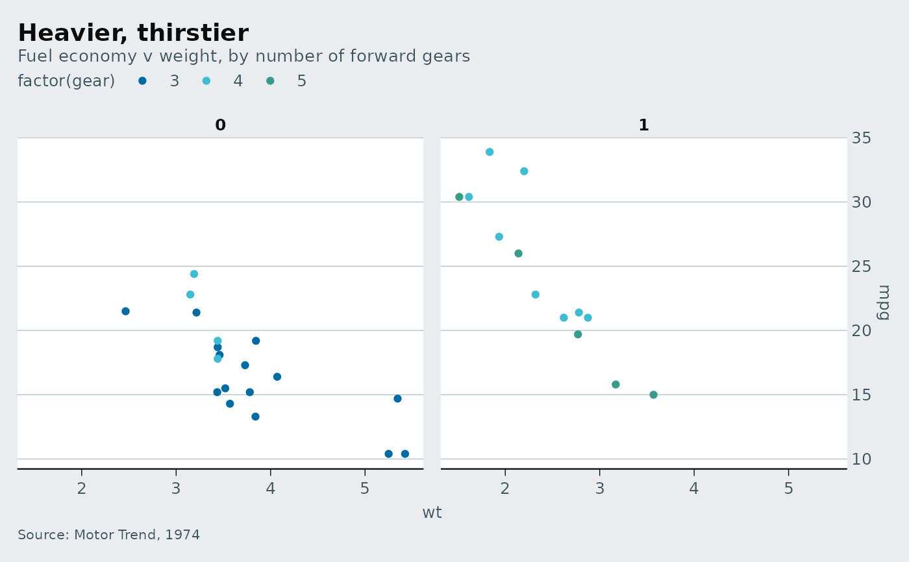
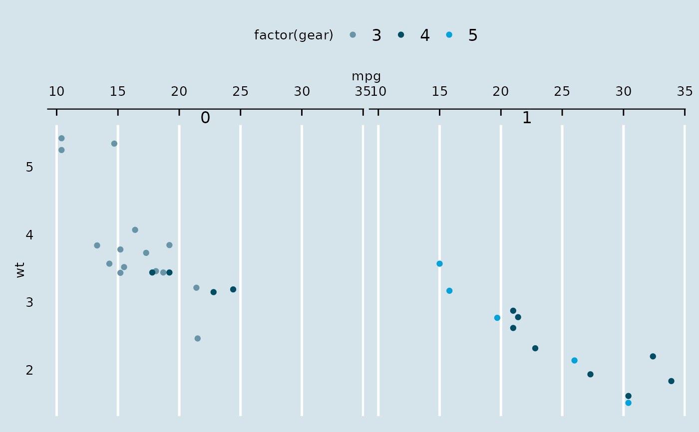
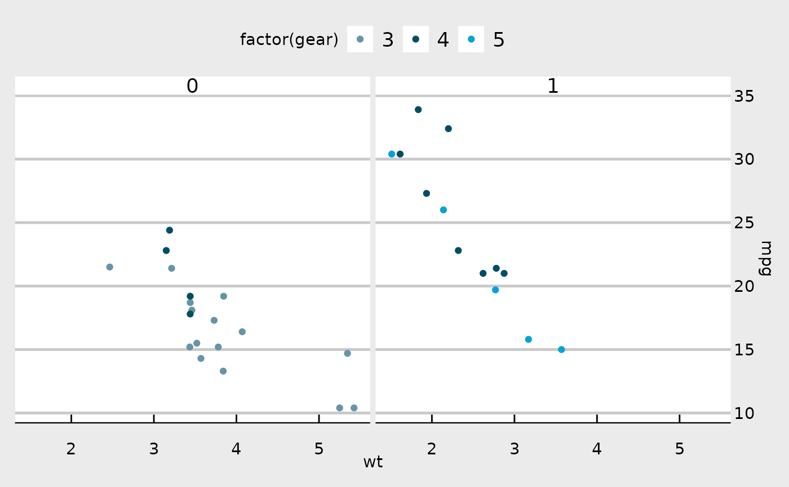
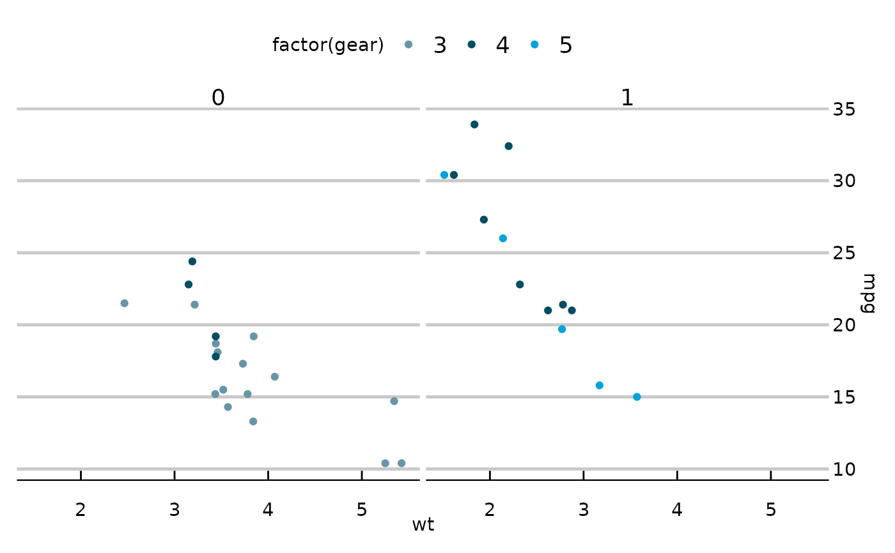

A theme that approximates the style of The Economist.
Usage
theme_economist(
base_size = 10,
base_family = "sans",
horizontal = TRUE,
dkpanel = FALSE
)
theme_economist_white(
base_size = 11,
base_family = "sans",
gray_bg = TRUE,
horizontal = TRUE
)Value
An object of class theme().
Details
theme_economist implements the standard bluish-gray
background theme in the print The Economist and
economist.com.
theme_economist_white implements a variant with a while
panel and light gray (or white) background often used by The Economist
blog Graphic Detail.
Use scale_color_economist() with this theme.
The x axis should be displayed on the right hand side.
The Economist uses "ITC Officina Sans" as its font for graphs. If you have access to this font, you can use it with the extrafont package. "Verdana" is a good substitute.
Examples
library("ggplot2")
p <- ggplot(mtcars) +
geom_point(aes(x = wt, y = mpg, colour = factor(gear))) +
facet_wrap(~am) +
# Economist puts x-axis labels on the right-hand side
scale_y_continuous(position = "right")
## Standard
p + theme_economist() +
scale_colour_economist()

# Change axis lines to vertical
p + theme_economist(horizontal = FALSE) +
scale_colour_economist() +
coord_flip()

## White panel/light gray background
p + theme_economist_white() +
scale_colour_economist()

## All white variant
p + theme_economist_white(gray_bg = FALSE) +
scale_colour_economist()

if (FALSE) { # \dontrun{
## The Economist uses ITC Officina Sans
library("extrafont")
p + theme_economist(base_family="ITC Officina Sans") +
scale_colour_economist()
## Verdana is a widely available substitute
p + theme_economist(base_family="Verdana") +
scale_colour_economist()
} # }